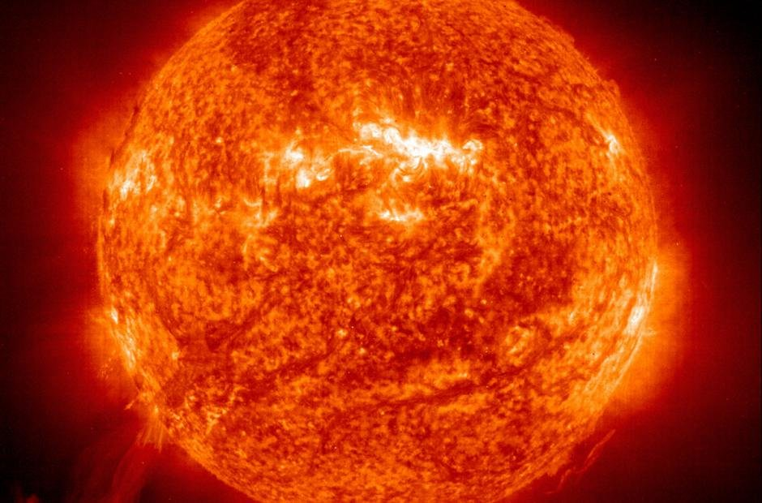
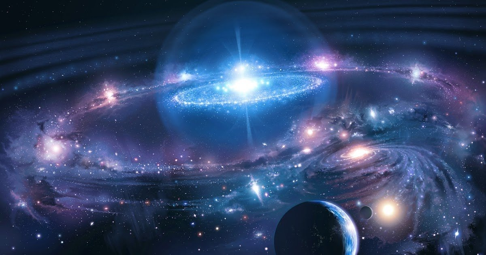
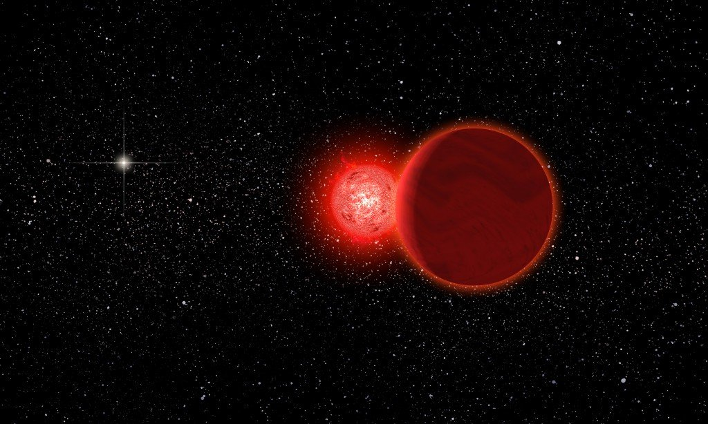
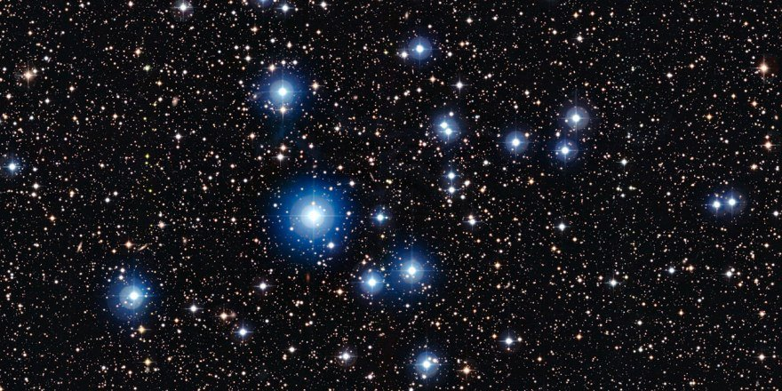
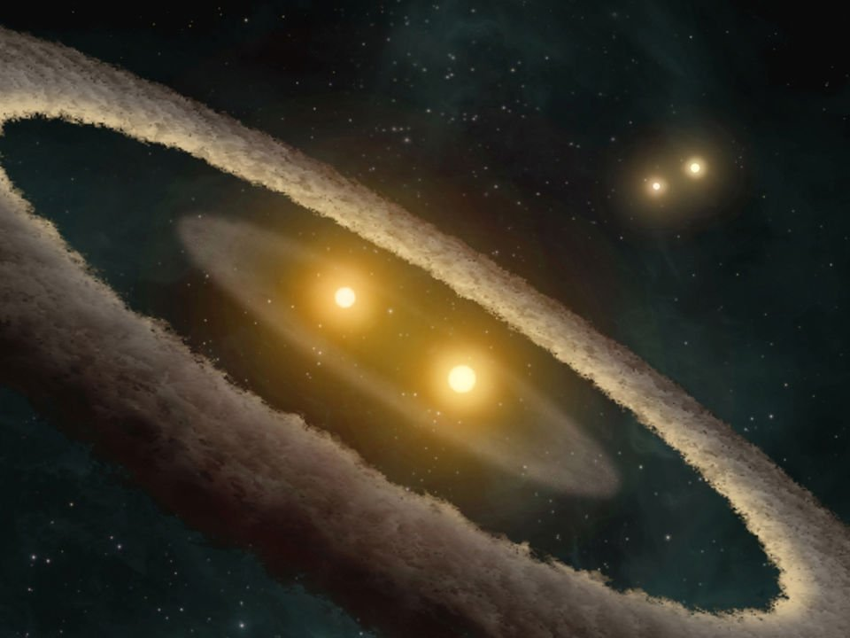
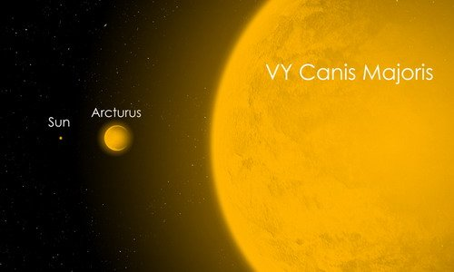
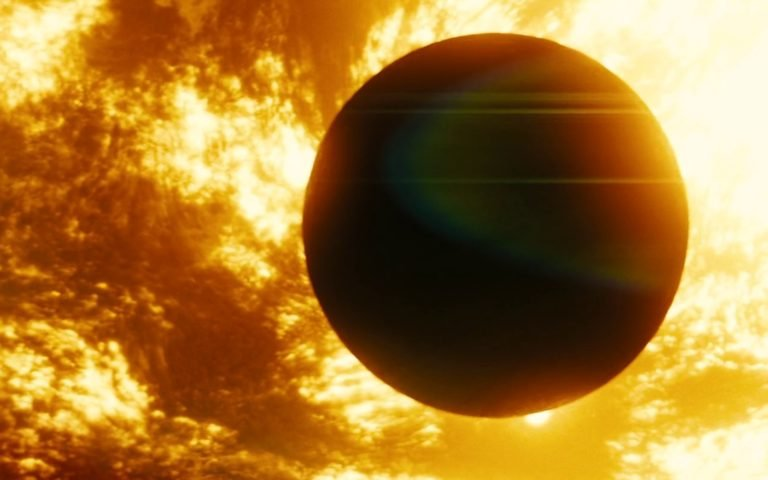
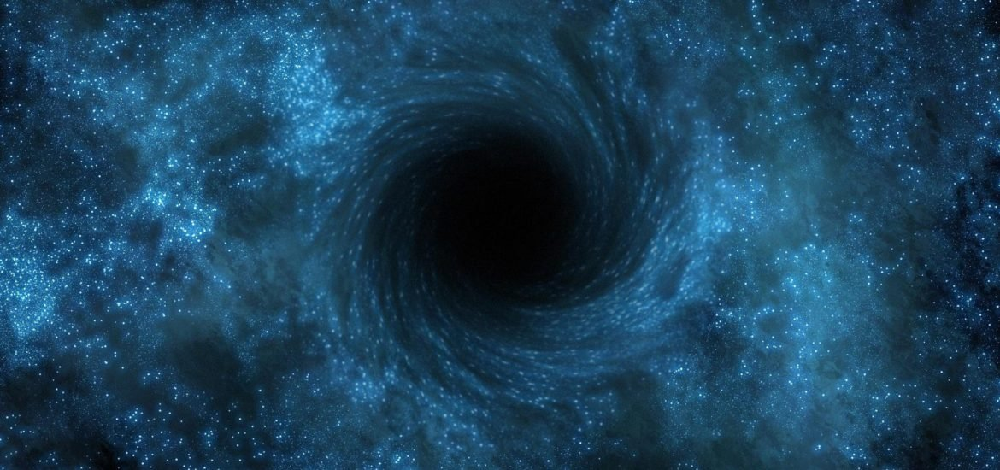
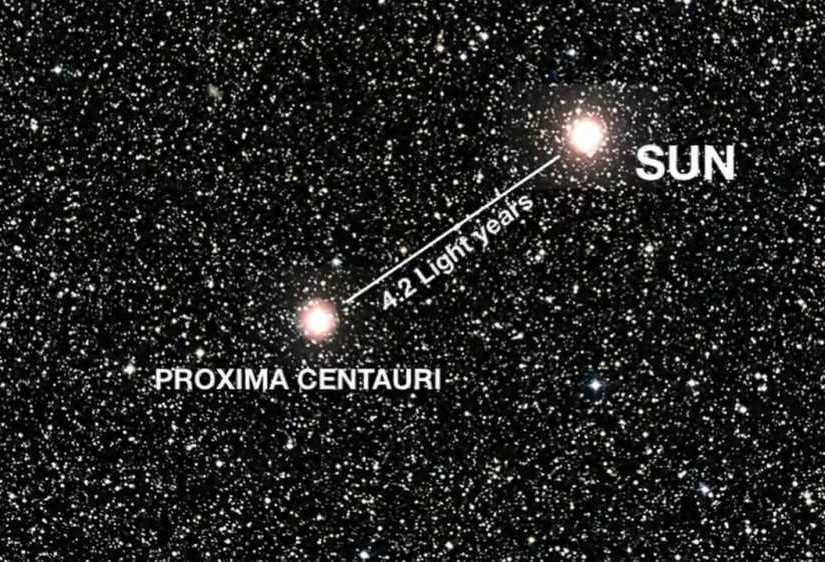
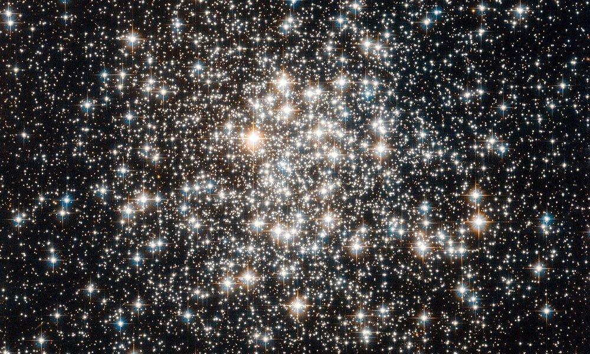

Звезды – это не только красивое свечение и ориентир на ночном небе, они еще и основа любой жизни. Это подтверждает пока лишь одно небесное светило – наше Солнце, но делает это уверено, принося ежедневно нам свет и тепло на протяжении уже многих миллионов лет. Но какие интересные факты про звезды нам еще известны?
1. Все звезды насколько бы разными они не были, состоят всегда из одной и той же материи. В начальном их состоянии 74% занимает водород, 25% уходит под гелий, а 1% составляют газообразные примеси различного рода. На протяжении своего существования звезды постепенно перерабатывают водород и на примере Солнца, у которого это соотношение составляет уже 70% к 29%, наблюдать данный процесс удобнее всего.
2. Среди интересных фактов о звездах в космосе - баланс их процессов. На самом деле гравитация заставляет небесное тело втягиваться само в себя, значительно уменьшаясь в размерах, и длиться это могло бы миллионы лет, пока в объеме бы они не стали все похожи на нейтронные звезды, если бы не свет. Благодаря постоянной термоядерной реакции он вырабатывается и исходит из самого центра светила, проходя через него тысячи лет, действуя как сопротивление гравитации.
3. Наибольшее число среди звезд занимают красные карлики. Они, как правило, вдвое меньше нашего Солнца и вырабатывают соответственно небольшое количество энергии – около 0,00001 от возможностей нашего светила. Их называют неудавшимися, неполноценными и внутреннего запаса гидрогена им хватает лишь на 10 триллионов лет.
4. Интересный факт о звездах на небе. Мы привыкли думать, что голубое свечение холодное, а оранжевый и красный свет в свою очередь больше похожи на источники тепла. Но на самом деле именно огненно-красные светила имеют минимальную температуру – не более 3,600 по Кельвину, а голубые максимальную – до 12.000 по Кельвину.
5. На первый взгляд кажется, что каждая звезда сама по себе. Но встречаются те, которые образуют пары, имея при этом общий гравитационный центр. Но и это не предел, ученые нашли и три, и четыре небесных тела соединенных в одну систему. Стоит только представить, что вместо одного Солнца мы могли бы иметь четыре.
6. Самой большой планетой в нашей системе является Сатурн, он поистине огромен, но есть светила, что могли бы его поглотить собой. Их называют супергигантами и один из наиболее известных – это Бетельгейзе, он в 1000 раз больше нашего Солнца. Однако и это не предел, ведь наиболее огромным принято считать VY Большого Пса, который вдвое больше самого Бетельгейзе.
7. Интересный факт о планетах и звездах, если бы вместо нашего Солнца было нечто чуть горячее, за несколько миллионов лет Меркурий бы просто обратился в пар.
8. Небольшие небесные светила заканчивают свое существование, образуя белые карлики, и гиганты в свою очередь оставляют после себя черные дыры.
9. Несмотря на немыслимое число газообразных гигантов, что нас окружают, все они находятся очень и очень далеко. Ближайший к нам называется Проксима Центавра и до него от Земли около четырех с половиной световых лет. То есть луч света сможет преодолеть это расстояние за такое время, что же касается человека, то на самом невероятно быстром космическом корабле ему бы понадобилось не менее 70 тысяч лет, что делает путешествия между светилами просто невозможным на данный момент.
10. Сколько всего звезд существует? Вычислить это крайне сложно, а может даже невозможно, ведь лишь в нашей галактике их число в среднем составляет 300 миллиардов. А всего галактик может быть 500 миллиардов и в каждой примерно столько же газообразных гигантов, что делает суммарное число довольно пугающим.